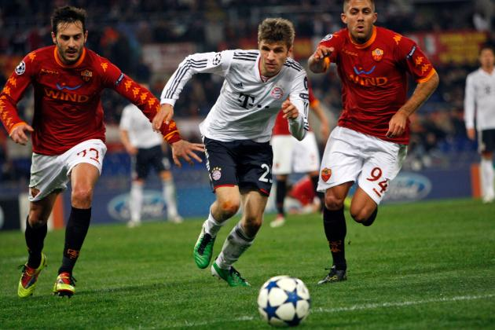

Rivalitate
Principala rivală a acestei echipe este Borussia Dortmund. Bayern și Dortmund s-au luptat pentru multe titluri în Bundesliga. Cele două echipe au jucat una împotriva celeilalte în 3 finale din DFB-Pokal din 2008, 2012 și 2014. Bayern și Dortmund au jucat de asemenea și în DFL-Supercup în 1989, 2008, 2012, 2013 și 2014. Apogeul rivalității a fost când Bayern a învins-o pe Dortmund cu scorul de 2-1 în finala UEFA Champions Leauge 2012-2013. Bayern este una dintre cele 3 cluburi profesionale de fotbal din Munchen. O altă rivală din zona Munchen-ului ar fi echipa TSV 1860 Munchen, care a fost cel mai bun club al anilor '60, câștigând campionatul și o cupă.
